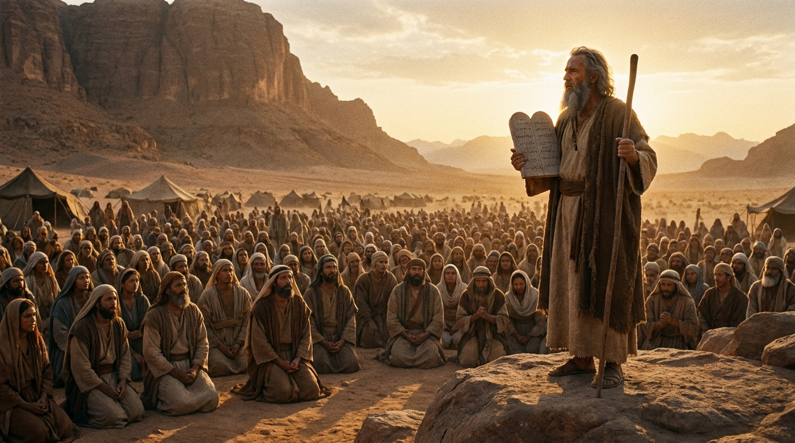

A Renovação da Aliança
O livro de Deuteronômio, que significa "Segunda Lei", registra os últimos discursos de Moisés à nova geração de Israel antes de entrarem na Terra Prometida. É um chamado urgente à obediência e ao amor exclusivo a Deus.
Ficha Técnica
- Autor: Moisés
- Tema Principal: Obediência, Renovação da Aliança e a fidelidade de Deus.
- Versículo-Chave: "Ouça, ó Israel: O Senhor, o nosso Deus, é o único Senhor." (Deuteronômio 6:4)
Estrutura
- Discursos de Moisés (Caps. 1-11)
- Leis e Estatutos (Caps. 12-26)
- Bênçãos e Maldições (Caps. 27-30)
- Morte de Moisés e sucessão de Josué (Caps. 31-34)